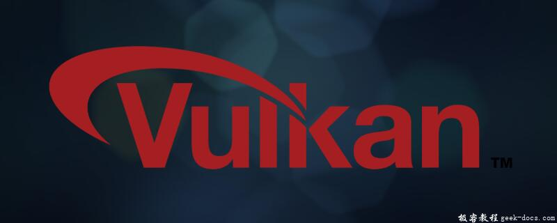

Vulkan是一个用于图形和计算设备的编程接口，Vulkan是一个跨平台的2D和3D绘图应用程序接口（API），最早由科纳斯组织在2015年游戏开发者大会（GDC）上发表。科纳斯最先把VulkanAPI称为“次世代OpenGL行动”（next generation OpenGL initiative）或“glNext”，但在正式宣布Vulkan之后这些名字就没有再使用了。就像OpenGL，Vulkan针对实时3D程序（如电子游戏）设计，Vulkan并计划提供高性能和低CPU管理负担（overhead），这也是Direct3D12和 AMD 的 Mantle 的目标。Vulkan兼容 Mantle 的一个分支，并使用了 Mantle 的一些组件。

Vulkan 简介
Vulkan是一个用于图形和计算设备的编程接口。Vulkan设备通常由一个处理器和一定数量的固定功能硬件模块组成，用于加速图形和计算操作。通常，设备中的处理器是高度线程化的，所以在极大程度上Vulkan里的计算模型是基于并行计算的。Vulkan还可以访问运行应用程序的主处理器上的共享或非共享内存。Vulkan也会给开发人员提供这个内存。
Vulkan是个显式的API，也就是说，几乎所有的事情你都需要亲自负责。驱动程序是一个软件，用于接收API调用传递过来的指令和数据，并将它们进行转换，使得硬件可以理解。在老的API（例如OpenGL）里，驱动程序会跟踪大量对象的状态，自动管理内存和同步，以及在程序运行时检查错误。这对开发人员非常友好，但是在应用程序经过调试并且正确运行时，会消耗宝贵的CPU性能。Vulkan解决这个问题的方式是，将状态跟踪、同步和内存管理交给了应用程序开发人员，同时将正确性检查交给各个层进行代理，而要想使用这些层必须手动启用。这些层在正常情况下不会在应用程序里执行。
由于这些原因，Vulkan难以使用，并且在一定程度上很不稳定。你需要做大量的工作来保证Vulkan运行正常，并且API的错误使用经常会导致图形错乱甚至程序崩溃，而在传统的图形API里你通常会提前收到用于帮助解决问题的错误消息。以此为代价，Vulkan提供了对设备的更多控制、清晰的线程模型以及比传统API高得多的性能。
另外，Vulkan不仅仅被设计成图形API，它还用作异构设备，例如图形处理单元（Graphics Processing Unit，GPU）、数字信号处理器（Digital Signal Processor，DSP）和固定功能硬件。功能可以粗略地划分为几类。Vulkan的当前版本定义了传输类别——用于复制数据；计算类别——用于运行着色器进行计算工作；图形类别——包括光栅化、图元装配、混合、深度和模板测试，以及图形程序员所熟悉的其他功能。
Vulkan设备对每个分类的支持都是可选的，甚至可以根本不支持图形。因此，将图像显示到适配器设备上的API（这个过程叫作展示）不但是可选择的功能，而且是扩展功能，而不是核心API。
Vulkan 特征
同 OpenGL® 一样，Vulkan™ 也由 Khronos 集团开发。它是 AMD Mantle 的后续版本，继承了前者强大的低开销架构，使软件开发人员能够全面获取 Radeon™ GPU 与多核 CPU 的性能、效率和功能。
相对于 OpenGL，Vulkan™ 大幅降低了CPU 在提供重要特性、性能和影像质量时的“API 开销” （CPU 在分析游戏的硬件需求时所执行的后台工作），而且可以使用通常通过 OpenGL 无法访问的 GPU 硬件特性。
独特的跨 OS 支持
Vulkan™ 能够支持深入硬件底层的控制，为 Windows® 7、Windows® 8.1、Windows® 10 和 Linux® 带来更快的性能和更高的影像质量。Vulkan™API 还提供超高的 OS 兼容性、渲染特性和硬件效率。
自动兼容 GCN 架构
目前只有基于GCN架构 的Radeon™显卡拥有强大的“异步计算”功能，使显卡得以并行处理3D几何图形与计算工作量。例如，当游戏需要同时计算复杂照明与渲染人物时，这种功能就找到了用武之地。这些任务并不需要在Radeon™ 显卡上串行运行，因此可以节约时间、提升整体帧速率。现在，设计Vulkan应用的游戏开发者可以在所有近期版本的Windows和Linux系统中利用这种独特硬件特性。
Vulkan 兼容平台
AMD Radeon Software Crimson 版 16.3 及更新版本在 Windows® 7、Window® 8.1、Windows® 10 和 Linux® 中支持基于次世代图形核心架构的以下 AMD APU 和 Radeon™ 显卡：
- AMD Radeon™ R9 系列显卡
- AMD Radeon™ R7 系列显卡
- AMD Radeon™ R5 240 显卡
- AMD Radeon™ HD 8000 系列 OEM 系统显卡（HD 8570 及更高级别）
- AMD Radeon™ HD 8000M 系列笔记本显卡
- AMD Radeon™ HD 7000 系列显卡（HD 7730 及更高级别）
- AMD Radeon™ HD 7000M 系列笔记本显卡（HD 7730M 及更高级别）
- AMD A4/A6/A8/A10-7000 系列 APU
- AMD A6/A8/A10 PRO-7000 系列 APU
- AMD A6/A8/A10/FX™ 8000 系列 APU
- AMD E1/A4/A10 Micro-6000 系列 APU
- AMD E1/E2/A4/A6/A8-6000 系列 APU
- AMD A4-1200、A4-1300 和 A6-1400 系列 APU
- AMD E1-2000、E2-3000、A4-5000、A6-5000 和 A4 Pro-3000 系列 APU
Android 7.0 支持
自 Android 7.0 开发者预览版开始，Google便在系统平台中添加了对Vulkan的API支持。